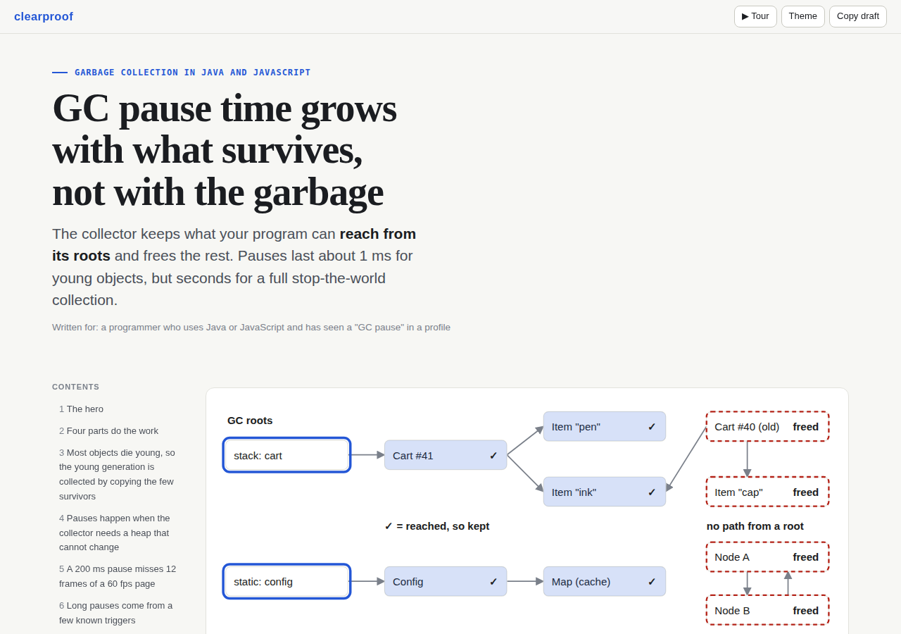

Plugin for Claude Code
clearproof: clear visuals, proven answers
Ask Claude anything — a tech concept, a topic you are learning, a money decision, code an AI wrote — and get one interactive page you understand in minutes and can trust: diagrams you step through, charts from real numbers, and proof for every claim.
/plugin marketplace add Inspire-Labs-AI/clearproof-html-skill /plugin install clearproof@clearproof

Example pages
Garbage collectionWhy GC pauses grow with live data. Stepper and live slider.
Home-loan prepaymentEvery number computed by a calculator run at build time.
ASD-STE100 explainedThe aerospace writing standard Karpathy suggested for reading LLM output.
TCP connectionsHandshake and teardown as sequence diagrams you play step by step.